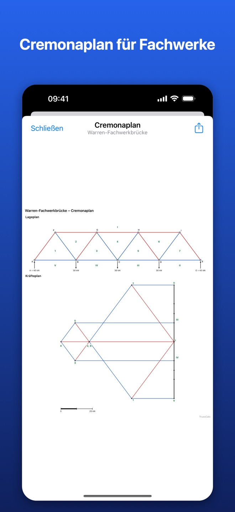

Cremonaplan für Fachwerke
Der Cremonaplan bestimmt alle Stabkräfte eines Fachwerks zeichnerisch: Im Kräfteplan liegen die Kraftecke aller Knoten ineinander, jede Stabkraft kommt genau einmal vor. TrussCalc zeichnet beide Pläne zu deinem Fachwerk, damit du deine eigene Zeichnung Schritt für Schritt vergleichen kannst.

Was der Plan enthält
- Lageplan: das Fachwerk mit den äußeren Kräften und den Feldern (außen I, II, III …, innen 1, 2, 3 …)
- Kräfteplan: maßstäblich, zum Beispiel 1 cm ≙ 10 kN, Zug blau, Druck rot, mit Maßstabsbalken
- Knotenreihenfolge: in welcher Reihenfolge die Knoten gezeichnet werden und welche Stabkräfte dabei entstehen
- Kontrolltabelle: Länge im Plan, daraus abgelesene Kraft und der Wert der Berechnung
Wann es einen Cremonaplan gibt
Für statisch bestimmte Fachwerke, die sich Knoten für Knoten lösen lassen, deren Stäbe sich nicht kreuzen und deren äußere Kräfte an Randknoten angreifen. Ist das bei deinem System nicht der Fall, nennt TrussCalc den Grund.
Beispiel als PDF: Pratt-Fachwerkbrücke mit Cremonaplan (Abschnitt 7)

Nur zum Lernen. TrussCalc ist ein Lernwerkzeug. Prüfe die Ergebnisse immer von Hand oder mit anderer Software. Die App ersetzt keine Tragwerksplanung.